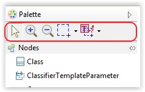
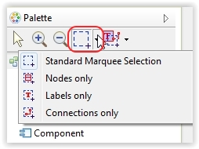
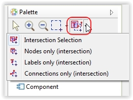
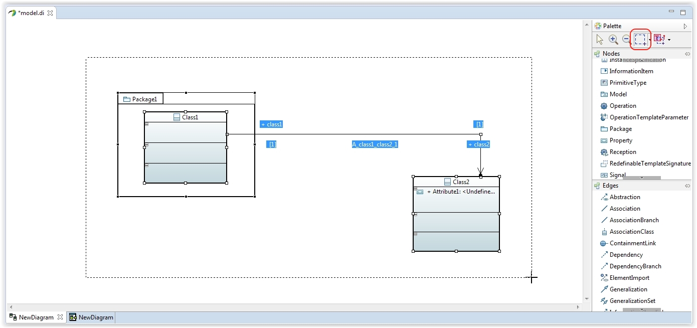
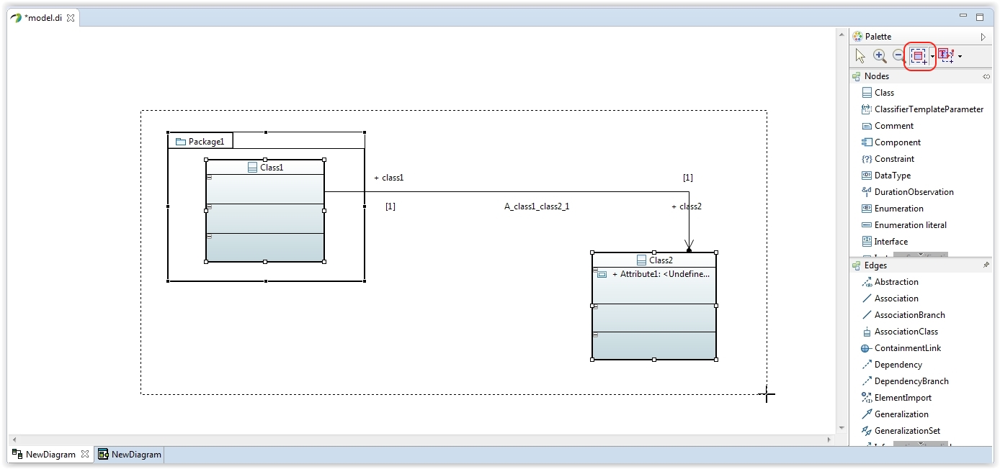
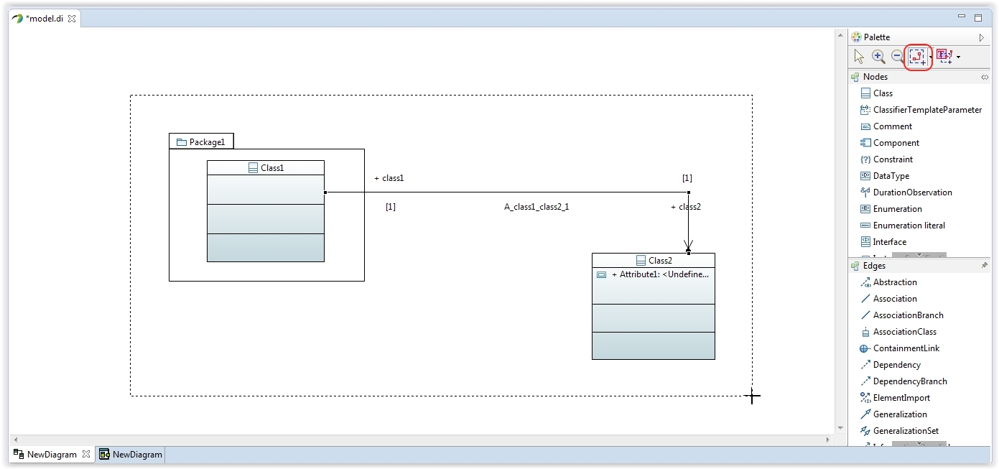
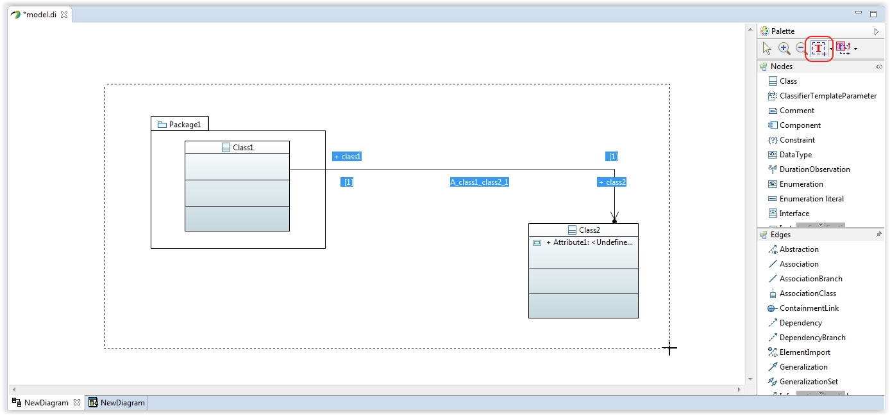
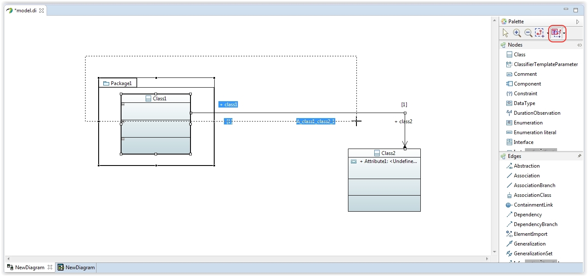
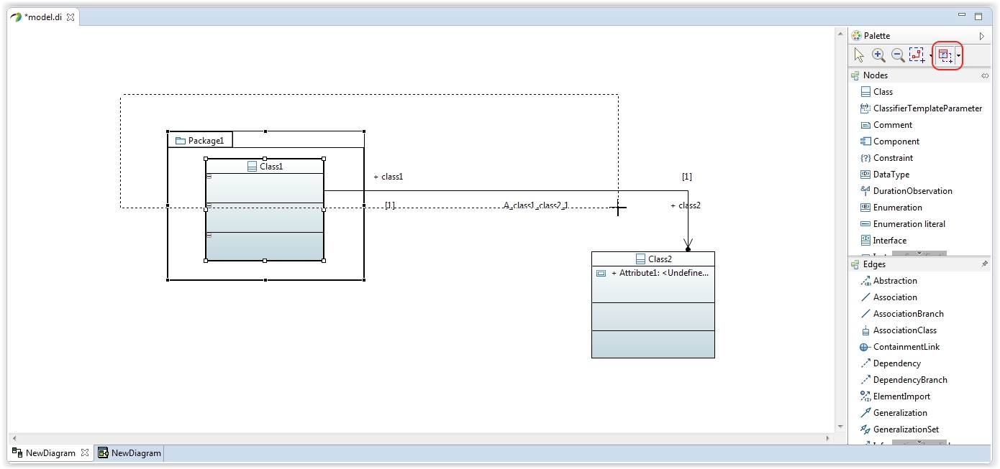
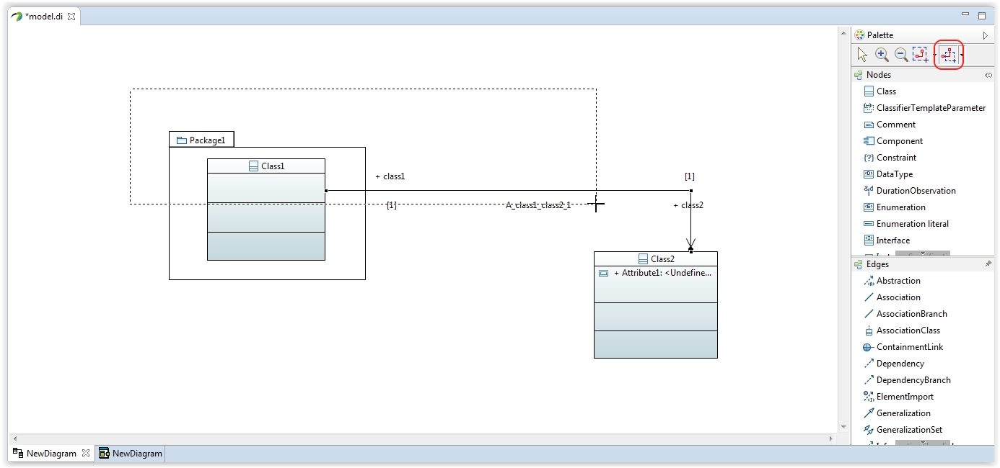

In order to enlarge the default selection tool available in the Palette, additionnal marquee selection tools have been added into Papyrus.

A marquee selection is a multi-selection that allows to select several elements through a rectangle area.
Two types of marquee selections are available:


A demonstration of this tool is available on the Papyrus Channel : Marquee Selection Tool Demonstration
The Standard Marquee selection tool comes in a variety of 4 options:
Select blocks, labels and connections inside of the marquee area. 
Select only the blocks inside of the marquee area. 
Select only the connectors inside of the marquee area. 
Select only the floating labels inside of the marquee area. 
The Rubberband Marquee selection tool comes in a variety of 4 options:
Select the blocks, the labels and the connectors intersecting the marquee area or included inside of the marquee area. 
Select only the blocks intersecting the marquee area or included inside of the marquee area. 
Select only the connectors intersecting the marquee area or included inside of the marquee area. 
Select only the labels intersecting the marquee area or included inside of the marquee area.